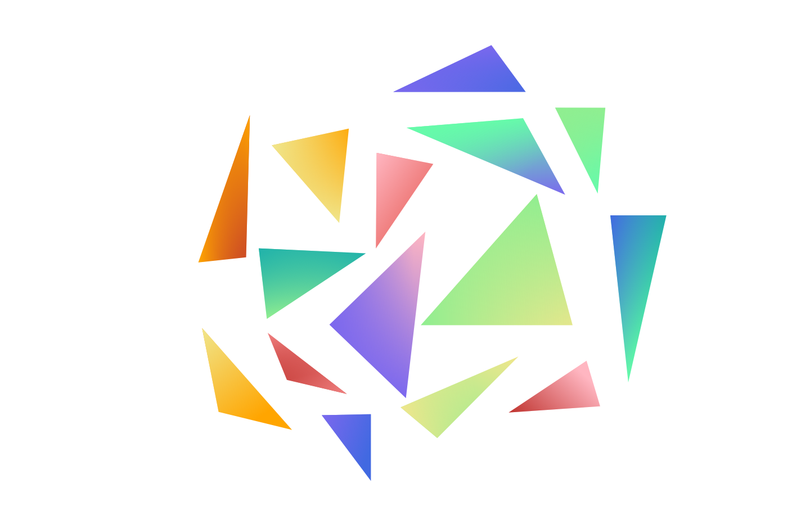

\(\newcommand{\A}{\mat{A}}\)
\(\newcommand{\B}{\mat{B}}\)
\(\newcommand{\C}{\mat{C}}\)
\(\newcommand{\D}{\mat{D}}\)
\(\newcommand{\E}{\mat{E}}\)
\(\newcommand{\F}{\mat{F}}\)
\(\newcommand{\G}{\mat{G}}\)
\(\newcommand{\H}{\mat{H}}\)
\(\newcommand{\I}{\mat{I}}\)
\(\newcommand{\J}{\mat{J}}\)
\(\newcommand{\K}{\mat{K}}\)
\(\newcommand{\L}{\mat{L}}\)
\(\newcommand{\M}{\mat{M}}\)
\(\newcommand{\N}{\mat{N}}\)
\(\newcommand{\One}{\mathbf{1}}\)
\(\newcommand{\P}{\mat{P}}\)
\(\newcommand{\Q}{\mat{Q}}\)
\(\newcommand{\Rot}{\mat{R}}\)
\(\newcommand{\R}{\mathbb{R}}\)
\(\newcommand{\S}{\mathcal{S}}\)
\(\newcommand{\T}{\mat{T}}\)
\(\newcommand{\U}{\mat{U}}\)
\(\newcommand{\V}{\mat{V}}\)
\(\newcommand{\W}{\mat{W}}\)
\(\newcommand{\X}{\mat{X}}\)
\(\newcommand{\Y}{\mat{Y}}\)
\(\newcommand{\argmax}{\mathop{\text{argmax}}}\)
\(\newcommand{\argmin}{\mathop{\text{argmin}}}\)
\(\newcommand{\a}{\vec{a}}\)
\(\newcommand{\b}{\vec{b}}\)
\(\newcommand{\c}{\vec{c}}\)
\(\newcommand{\d}{\vec{d}}\)
\(\newcommand{\e}{\vec{e}}\)
\(\newcommand{\f}{\vec{f}}\)
\(\newcommand{\g}{\vec{g}}\)
\(\newcommand{\mat}[1]{\mathbf{#1}}\)
\(\newcommand{\min}{\mathop{\text{min}}}\)
\(\newcommand{\m}{\vec{m}}\)
\(\newcommand{\n}{\vec{n}}\)
\(\newcommand{\p}{\vec{p}}\)
\(\newcommand{\q}{\vec{q}}\)
\(\newcommand{\r}{\vec{r}}\)
\(\newcommand{\transpose}{{\mathsf T}}\)
\(\newcommand{\tr}[1]{\mathop{\text{tr}}{\left(#1\right)}}\)
\(\newcommand{\s}{\vec{s}}\)
\(\newcommand{\t}{\vec{t}}\)
\(\newcommand{\u}{\vec{u}}\)
\(\newcommand{\vec}[1]{\mathbf{#1}}\)
\(\newcommand{\x}{\vec{x}}\)
\(\newcommand{\y}{\vec{y}}\)
\(\newcommand{\z}{\vec{z}}\)
\(\newcommand{\0}{\vec{0}}\)
\(\renewcommand{\v}{\vec{v}}\)
\(\renewcommand{\hat}[1]{\widehat{#1}}\)
CS-GY-6533 Computer Graphic: 2D Editor
A 2D triangles scene editor implemented in C++ combined with OpenGL. It supports the functionalities of insert, tranlate, colorize, rotate, scale, animate and it allow users to export scene into .svg files.
How To Use
I: Start Insertion mode.
O: Start Translation mode.
P: Start Deletion mode.
C: Start Colorization mode.
U: Start Animation mode.
Y: Start Bezier mode.
E: Reset to default mode.
W,S,A,D: Translate the entire scene up, down, left, right respectively by 20%.
+,-: Zoom in or out by 20%.
H,J: Rotate the selected triangle by 10 degree clockwise or counter-clockwise around the triangle barycenter.
K,L: Scale the selected triangle up or down by 25% respectively.
1-9: In Colorization mode, after clicking a triangle vertex, press key 1-9 to change its color.
1-7: In Animation mode, after selecting a triangle by clicking on it, press key 1-7 to change the way it moves.
1: Rotate around its current barycenter.
2: Flip horizontally.
3: Flip vertically.
4: Translate horizontally.
5: Translate vertically.
6: Zoom in and out.
7: Rotate around its origin barycenter.
SPACE: Export a .svg file of the current scene.
Q: Quit the program.
Data Structures
This section will introduce the main data structures that I defined for the general use in this Assignment. The following classes are defined in Helper.h and Editor.h file.
VertexBufferObject
Program
Editor
VertexBufferObject
A VBO is a data container that lives in the GPU memory. It uploads the vertex data we define as a matrix on CPU side and connects data with a position "slot" on GPU side.
class VertexBufferObject {
public:
typedef unsigned int GLuint;
typedef int GLint;
GLuint id;
GLuint rows;
GLuint cols;
VertexBufferObject() : id(0), rows(0), cols(0) {}
void init();
void update(const Eigen::MatrixXf& M);
void bind();
void free();
};
update() method of VBO will take in a 4 X N Eigen Matrix of float. Each column of the Eigen Matrix stores the information about a single vertex. The first two rows represents the corresponding x coordinate and y coordinate of a vertex position. The third and forth value of same column is used as a color and animation indicators (more explanation below)
Possible Matrix
0.0, 0.3, -0.3 /* new triangle will be here. */
0.3, 0.0, 0.0
1.0, 3.0, 4.0
2.0, 2.0, 2.0
The Matrix above can be interpreted as 3 vertices (of a triangle). The color indicator of the first vertex is 1.0. The color indicator of the second vertex is 3.0. The third is 4.0. The animation indicator for all three vertices are 2.0. The three vertices of the same triangle always have a same animation indicator value. When the program is running, these are the data that will be send to GPU. When new triangles are inserted, the matrix will expand to it right, so the 4th to 6th column will be used to shore information about the second triangle, 7th to 9th used for the third, and so on.
Program
class Program {
public:
typedef unsigned int GLuint;
typedef int GLint;
GLuint vertex_shader;
GLuint fragment_shader;
GLuint program_shader;
Program() : vertex_shader(0), fragment_shader(0), program_shader(0) { }
bool init(const std::string vertex_shader_filename, const std::string fragment_shader_filename, const std::string &fragment_data_name);
void bind();
void free();
GLint attrib(const std::string &name) const;
GLint uniform(const std::string &name) const;
GLint bindVertexAttribArray(const std::string &name, VertexBufferObject& VBO) const;
GLuint create_shader_helper(GLint type, const std::string &shader_filename);
std::string read_glsl_file(const std::string &pathToFile);
};
A Program is composed of two shaders: one vertex shader and one fragment shader. Each shader is initialized by calling create_shader_helper function on the .glsl file under the ../src/ folder. The task of reading .glsl files into GLchar is taken over by the read_glsl_file method. The Program init() will bind these two shader together into one on GPU side. Here are how these two shaders look like.
Vertex shader gets a position as input, which is bind with VBO we previously mentioned. It is in fact a column of the 4 X N matrix, so it contains an x and y, a color indicator as float and an animation indicator as float. The output of this vertex shader is f_color, as the inout to fragment shader for further rasterization. In addition, vertex shader also directly output to a GL variablegl_Position to determine the vertex position exists on GPU. There are also some global variables in the vertex shader, which declared as uniform.
model is the model matrix defined for the current vertex.
view is the viewing matrix dthat change vertex from world coordinate system to camera coordinate system.
barycenter is a 2D vector that represents the the barycenter of the triangle that the current vertex belongs to.
time is a float value of the time since the start of the program.
animated indicates whether the program is now in animation mode.
in vec4 position;
out vec3 f_color;
uniform mat4 view;
uniform mat4 model;
uniform vec2 barycenter;
uniform float time;
uniform int animated;
void main()
{
...
gl_Position = ...
f_color = ...
};
Fragment shader uses the f_color from vertex shader as input, and output outColor as the final output. It also takes a uniform boolean variable click. The reason of passing in this variable is that to indicate a triangle being clicked, we mark the triangle in blue color instead of its origin color. By checking this click variable, program knows whether it should display blue color or not.
out vec4 outColor;
in vec3 f_color;
uniform bool click;
void main()
{
outColor = ...
}
Editor
Editor class is used as a state machine to represent the current status of the editor. Below is the detail construction of Editor with comments.
class Editor {
public:
int mode;
int triangle_count; // Numbers of triangle that have been inserted.
int insert_step; // Indicate which step (1,2,3) is the program at of insertion.
int ith_triangle; // Used by: Translate, Delete, Animation. Which triangle was clicked.
bool triangle_clicked; // If the mouse now clicked on a triangle.
int closest_vertex; // Used by: Colorize, Bezier
int bezier_step; // Which step is the program at when editing bezier curve.
float aspect_ratio;
float width;
float height;
int animation_type; // animation type: 1-7.
int snap_num; // screen shot counter. for different file names.
Eigen::MatrixXf V;
Eigen::Matrix4f view;
Eigen::MatrixXf model;
Eigen::MatrixXf translation;
Eigen::MatrixXf rotation;
Eigen::MatrixXf scaling;
Vector2d p0; // previous cursor position
Vector2d p1; // current cursor position
void init(void);
bool click_on_triangle(Eigen::Vector2d world_coord_2d);
void find_closest_vertex(int from, int to, int nv);
void model_matrix_expand(void);
void rotate_by(double degree, int direction);
void scale_by(double percentage, int up);
void delete_at(int triangle_index);
void switch_mode(int m);
float bezier_curve(float V1, float V2, float V3, float V4, float t);
void screenshot(const char* filename);
Eigen::Vector2d pixel_to_world_coord(Eigen::Vector4f pixel, int width, int height);
std::string color_to_hex(float c);
};
Operations
The following section will introduce all the operations supported by this application.
Insert
Instruction:
press 'I' on keyboard;
click inside the window on some where you want to put the first vertex of triangle;
release the mouse;
click inside the window on some where you want to put the second vertex of triangle;
release the mouse;
click inside the window on some where you want to put the third vertex of triangle;
release the mouse;
Colorize
Instruction:
press 'C' on keyboard;
click on a vertex of triangle;
release the mouse;
press number key 1-9 to change color for the current vertex;
either press number key 1-9 to select another color or move mouse and click on other vertices;
Translate, Scale and Rotate
Instruction:
press 'O' on keyboard;
click on a triangle
(when the mouse is pressed, selected triangle will be marked as blue.);
you can drag the triangle to anywhere you want before the mouse release;
release the mouse
(after the mouse is released, selected triangle will have glowing effect to indicate selection);
press 'H','J' on the keyboard to rotate, 'K','L' to scale;
you can click mouse on blank space to unselect the triangle or click on other triangles to continue;
View Control
Instruction:
press one of the keys from 'W','A','S','D','+','-';
Animation
Instruction:
press 'U' on keyboard;
click on a triangle
(when the mouse is pressed, selected triangle will be marked as blue.);
release the mouse
(after the mouse is released, selected triangle will have glowing effect to indicate selection);
press number key 1-7 to start animation for the selected triangle
(after the animation start, you can press other key in 1-7 to change animation type);
click on other triangles to start animation for other triangles;
you can click mouse on blank space to unselect the triangle;
Bezier Curve
Instruction:
press 'Y' on keyboard;
click inside the window on some where you want to put the first control point of the Bezier Curve;
release the mouse;
click inside the window on some where you want to put the second control point of the Bezier Curve;
release the mouse;
click inside the window on some where you want to put the third control point of the Bezier Curve;
release the mouse;
click inside the window on some where you want to put the third control point of the Bezier Curve;
release the mouse;
you can drag on any of the control point to reshape the curve.
Export SVG
Instruction:
press 'SPACE' anytime when you want to capture the scene;

Model as Uniform
The model matrix is uploaded to GPU as a uniform variable. So, instead of updating the vertex positions on every translation, scaling or rotation, we simply upload a model matrix to GPU and leave the vertex position unchanged. All the computation works are done within the GPU.
How To Run?
Within the zx979 folder:
cd Assignment_2
mkdir build
cd build
cmake -DCMAKE_BUILD_TYPE=Release ../
make
./Assignment2_bin